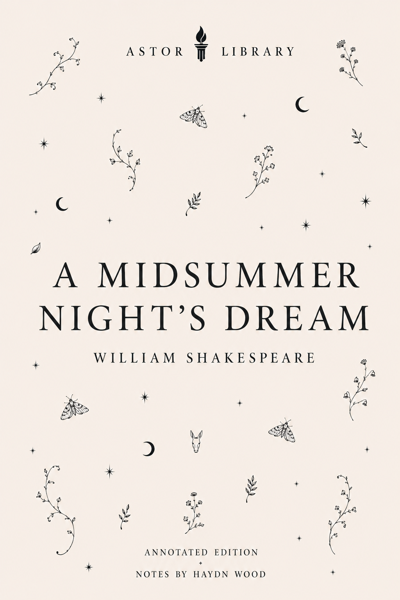

Four young lovers, quarrelling fairies and a troupe of amateur actors collide in a moonlit forest where desire refuses to stay fixed. The comedy is light on its feet, but never simple about love, power or the pleasure of watching other people lose control.
1598Francis Meres listed Midsummers night dreame in Palladis Tamia.
1600First printed as a quarto for Thomas Fisher, after public performance by the Lord Chamberlain's Men.
1619A second quarto appeared in the Pavier group, falsely dated 1600.
1623The First Folio printed the play in the Comedies section.
Athens
Law and marriage
The play begins with patriarchal command: Egeus demands legal force against Hermia's choice.
Forest
Desire disordered
The wood releases the lovers from civic law, but not into freedom. It gives them confusion, pursuit and enchantment.
Fairies
Power, not prettiness
Oberon and Puck do not merely decorate the comedy. They intervene, watch, misread and control.
Stage
Theatre watching itself
The mechanicals make bad tragedy, but they also expose how theatre works: props, role-play, audience contract and belief.

Astor Library edition
A Midsummer Night's Dream, William Shakespeare
In Athens, Hermia is ordered to marry Demetrius or face punishment. She loves Lysander, Helena loves Demetrius, and Demetrius wants Hermia. When the lovers flee into the wood, they enter a world of quarrelling fairies, mistaken affections and dangerous enchantment.
Oberon sends Puck to use a love-potion, but the spell goes wrong, turning desire into pursuit and humiliation. Bottom and his fellow tradesmen rehearse a tragic play for a royal wedding and become part of the forest's comic disorder.
The edition keeps the play itself at the centre. Scene introductions and notes help with the language as it unfolds; the longer pieces afterwards trace the early texts, sources and the very different worlds directors have found in the wood.
A few bearings for the play’s three worlds, its early text and its darker edges.
Three linked worlds Athens, the forest and the mechanicals' rehearsal world overlap, parody and correct one another.
No single source Shakespeare combines classical, medieval, folk and theatrical material rather than adapting one full earlier plot.
Printed early The 1600 quarto title page states that the play had been publicly acted by the Lord Chamberlain's Men.
Pyramus and Thisbe The mechanicals' play comes from Ovid and mirrors the lovers' near-tragic confusion in comic miniature.
Dream logic Puck's epilogue turns the audience into part of the contract: offence can be dissolved by treating the performance as dream.
Fairy darkness Modern productions often recover the play's coercion, humiliation and erotic unease, not only its prettiness.
Text and early publication
The play survives through quarto and folio transmission. The 1600 quarto is the key early witness behind most modern editions.
First Quarto title page of A Midsummer Night's Dream, 1600. Folger Shakespeare Library digital image.
1600
First Quarto: Thomas Fisher
Printed as A Midsommer nights dreame.
The title page says the play had been publicly acted by the Lord Chamberlain's Men.
It was sold at Thomas Fisher's shop at the sign of the White Hart in Fleet Street.
Folger records that most modern editions are based on the Q1 text.
Second Quarto title page, falsely dated 1600, associated with the 1619 Pavier or False Folio group. Folger Shakespeare Library digital image.
1619
Second Quarto and false dating
Q2 was based on Q1.
It carries a 1600 date but belongs to the 1619 Pavier group.
Folger records that Q2 adds some stage directions and small corrections.
Its existence shows how Shakespeare quartos could be repackaged before the First Folio.
First Folio text of A Midsummer Night's Dream, 1623. Folger Shakespeare Library digital image.
1623
First Folio
The First Folio printed the play among Shakespeare's comedies.
Folger records Q2 as the basis for the Folio text, with further small changes.
One noted Folio change is the substitution of Egeus for Philostrate in the final scene.
The Folio preserves the play as part of Shakespeare's collected dramatic canon.
Sources and story traditions
The play combines classical story, medieval romance, English folk material and Shakespeare's own theatrical invention.
Ovid
Pyramus and Thisbe
The mechanicals' play draws on the story of Pyramus and Thisbe in Ovid's Metamorphoses. Shakespeare turns its forbidden love, secret meeting and mistaken death into amateur performance. The result mirrors Romeo and Juliet, but drains tragedy into comic incompetence.
Chaucer and romance
Theseus, Hippolyta and court authority
Theseus and Hippolyta come from classical and medieval story traditions. Chaucer's Knight's Tale provides useful context for Theseus as ruler, judge and marriage-maker. Shakespeare's Athens begins as a legal system before it becomes a wedding court.
Folk belief
Puck and Robin Goodfellow
Puck, or Robin Goodfellow, comes from English folklore. Shakespeare makes him a servant and an improviser at once: he obeys Oberon, but enjoys misrule. In the epilogue, the plot-maker becomes the theatre's spokesman.
Court and household theatre
Aristocrats and artisans
The play understands elite ceremony and local amateur performance equally well. The mechanicals are funny because their craft logic is too literal for tragedy, yet their performance leaves the court audience visibly dependent on the same theatrical conventions it mocks.
Worlds of the play
The structure depends on crossing: city to forest, law to dream, aristocrats to tradesmen, human desire to fairy interference.
Athens
Civic law and forced choice
Egeus tries to use Athenian law to control Hermia's marriage.
Theseus begins as judge before he becomes wedding host.
The opening makes marriage a political and legal matter, not just a romantic one.
Henry Fuseli, Titania and Bottom, c. 1790. Tate Britain / Wikimedia Commons.
c.1790
Fuseli and the darker fairy imagination
Fuseli's painting was commissioned for Boydell's Shakespeare Gallery.
It presents the forest as erotic, strange and crowded, not merely charming.
This visual tradition matters because the play's enchantments are comic and coercive at once.
Mechanicals
Bad tragedy, good theatre
Bottom, Quince, Flute, Snout, Snug and Starveling make theatrical failure visible.
Their prologues over-explain what theatre normally asks audiences to imagine.
Wall, Moonshine and Lion are absurd because they are too literal.
Key dates
A concise timeline of publication, performance and adaptation.
c.1594-1596
Probable composition period
The usual dating places the play in the mid-1590s, close to Romeo and Juliet.
The wedding-performance theory is long-standing, but there is no secure evidence that it was written for one specific aristocratic wedding.
1598
Francis Meres record
Francis Meres listed Midsummers night dreame in Palladis Tamia.
This gives an early external record before the first quarto.
1600
First Quarto
Printed for Thomas Fisher.
The title page connects the play to public performance by the Lord Chamberlain's Men.
1623
First Folio
Printed in the Comedies section.
The Folio helped preserve the play as part of Shakespeare's collected dramatic canon.
1662
Pepys at Drury Lane
Samuel Pepys saw the play after the Restoration.
His diary response was hostile, a useful reminder that the play's reputation was not always secure.
Performance history
Stage versions reveal what a period thinks the forest is: pageant, fairyland, erotic disorder, childhood fantasy, circus, dream-space or nightmare.
1840
Madame Vestris at Covent Garden
Vestris's production is often treated as a major nineteenth-century staging.
Victorian versions leaned into music, spectacle and fairy prettiness.
This tradition shaped the play's long association with decorative enchantment.
Directed by Peter Brook for the Royal Shakespeare Company.
Sally Jacobs designed the bright white box set, rejecting the traditional leafy forest.
RSC records describe circus skills, trapeze work and doubled Theseus/Oberon and Hippolyta/Titania.
The production made the play stranger, more adult and more physically inventive.
2016
Erica Whyman: A Play for the Nation
RSC Artistic Director Erica Whyman staged the play with amateur companies across the UK.
The project renewed the mechanicals' amateur-theatre thread by embedding local groups into the production model.
It showed how the play can work as a community-theatre framework as well as a repertory text.
2025
Immersive and darker revivals
Recent British productions have continued to test the play's limits as celebration, nightmare, party and coercive dream.
Nicholas Hytner's Bridge Theatre staging returned in 2025 with immersive movement and aerial spectacle.
Other recent stagings have pushed the forest towards horror and social unease.
Music, opera and screen versions
The play's afterlife is unusually musical. Its fairies, songs and wedding frame have made it adaptable to opera, ballet, film and outdoor summer performance.
1826 / 1842
Mendelssohn
Mendelssohn composed the overture in 1826 and later incidental music in 1842.
The Wedding March became one of the play's best-known musical afterlives.
1960
Britten's opera
Benjamin Britten's opera, with libretto by Britten and Peter Pears, premiered at Aldeburgh in 1960.
It begins in the wood rather than Athens, changing the balance of the story from civic law to fairy world.
1935
Hollywood film
Max Reinhardt and William Dieterle directed the 1935 Warner Bros. film.
The cast included James Cagney as Bottom, Mickey Rooney as Puck and Olivia de Havilland as Hermia.
The film made the play into a large-scale studio fantasy.
1999
Michael Hoffman film
Hoffman's film relocates the play to a Tuscan setting around the turn of the twentieth century.
The cast includes Kevin Kline as Bottom, Michelle Pfeiffer as Titania and Rupert Everett as Oberon.
The bicycle imagery turns wandering and pursuit into a comic visual system.
Sources and further reading
Texts, archives and production histories for further exploration.
 LIBRARY
LIBRARY